Modelos o niveles de Servicio en la Nube
En este tema nos centraremos en los conceptos claves y las tecnologías de computación en la nube. El objetivo principal del tema no es la profundización técnica en la implementación de estas tecnologías, sino comprender su finalidad y cómo pueden utilizarse para impulsar la transformación digital en diversos sectores productivos. Se abordará el concepto de nube, se explorará su historia, sus diferentes modelos de implementación (pública, privada, híbrida, multinube), los modelos de servicio (IaaS, PaaS, SaaS, XaaS) y su impacto en la rentabilidad empresarial. Finalmente, introduce modelos de computación complementarios como Edge Computing, Fog Computing y Mist Computing.
La computación en la nube tiene sus orígenes en los años 50 con los mainframes y el procesamiento en tiempo compartido, donde grandes computadoras centrales permitían el acceso simultáneo e independiente a varios usuarios. Desde entonces la irrupción de diferentes tecnologías nos ha conducido hasta la nube actual.
Hoy en día, la computación en la nube es esencial para la transformación digital.
📌 Los mainframes son grandes computadoras centrales diseñadas para procesar enormes volúmenes de datos y ejecutar múltiples tareas de manera simultánea. Proporcionaban un entorno centralizado que permitía a varios usuarios acceder de manera simultánea e independiente.
Años 50: Mainframes y Procesamiento en Tiempo Compartido
Años 70: Virtualización
Años 80: Redes y Conectividad
Años 90: Computación Distribuida
2000-2006: Nacimiento de la Nube Moderna
2010 en adelante: Expansión y Diversificación
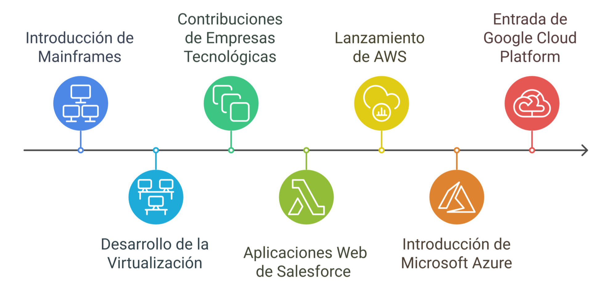
| Año | Hito Principal |
|---|---|
| 1950s | Mainframes y procesamiento en tiempo compartido. |
| 1970s | Virtualización y avances en hardware. |
| 1980s | Redes globales y modelo cliente-servidor. |
| 1990s | SaaS y computación distribuida. |
| 2006 | Lanzamiento de AWS, inicio de la nube moderna. |
| 2010-2011 | Aparición de Microsoft Azure y Google Cloud. |
| Actualidad | Modelos híbridos, multinube, Edge, Fog y Mist Computing. |
La computación en la nube o Cloud Computing consiste en ofrecer servicios de hardware y software a través de internet, eliminando la necesidad de poseer o gestionar infraestructura física propia. En esencia, permite a los usuarios acceder a recursos tecnológicos de manera remota, utilizando internet como medio principal. El término nube se utiliza para representar la disponibilidad de estos recursos desde cualquier lugar con conexión.
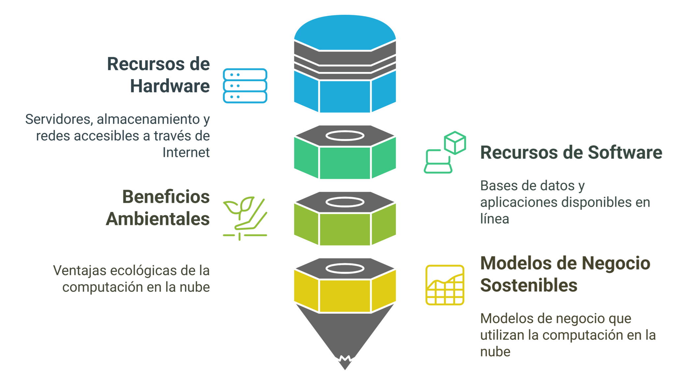
La siguiente tabla describe los principales beneficios o ventajas de la computación en la nube.
| Beneficios | Descripción |
|---|---|
| Acceso remoto | Permite trabajar desde cualquier lugar con conexión a internet. |
| Reducción de costes | Elimina la necesidad de grandes inversiones iniciales en infraestructura física. |
| Escalabilidad | Los recursos pueden ajustarse dinámicamente según las necesidades. |
| Modelo de pago por uso | Los usuarios solo pagan por los recursos que consumen. |
| Mantenimiento simplificado | Los proveedores de nube se encargan de actualizaciones y soporte técnico. |
| Sostenibilidad | Facilita modelos de negocio más ecológicos y eficientes. |
| Innovación | Libera a las empresas de tareas operativas, permitiéndoles centrarse en su actividad principal. |
La siguiente tabla describe las principales desventajas o inconvenientes de la computación en la nube.
| Inconvenientes | Descripción |
|---|---|
| Dependencia de internet | Requiere una conexión estable para acceder a los servicios. |
| Privacidad y seguridad | Los datos sensibles pueden estar expuestos a riesgos si no se gestionan adecuadamente. |
| Costes variables | Los costes pueden ser difíciles de prever debido al modelo de pago por uso. |
| Dependencia del proveedor | Cambiar de proveedor puede ser complejo y costoso. |
| Limitaciones de personalización | Algunos servicios no permiten adaptaciones específicas a las necesidades del cliente. |
| Latencia | Puede haber retrasos en el acceso a datos o servicios en ciertas ubicaciones. |
Los modelos de implementación en la nube definen cómo se estructuran y gestionan los recursos tecnológicos en función de las necesidades de las organizaciones. Cada modelo ofrece diferentes niveles de control, flexibilidad y seguridad, permitiendo a las empresas elegir la opción que mejor se adapte a sus objetivos estratégicos y operativos. A continuación, se describen los principales modelos de implementación, destacando sus características, ventajas y casos de uso.
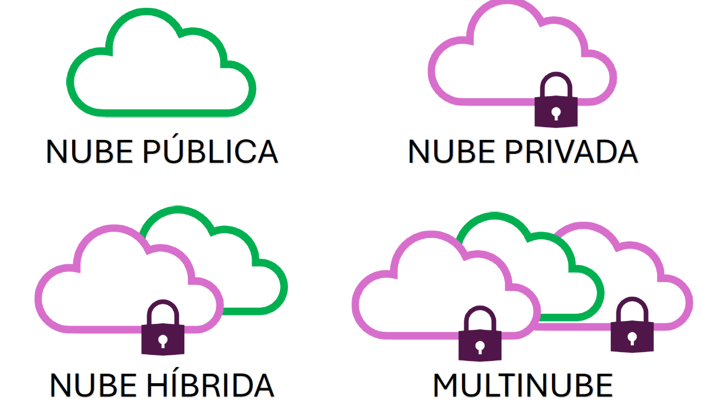
La nube pública es un modelo de implementación en el que los recursos tecnológicos, como servidores, almacenamiento y aplicaciones, son gestionados por un proveedor externo y compartidos entre múltiples usuarios a través de internet.
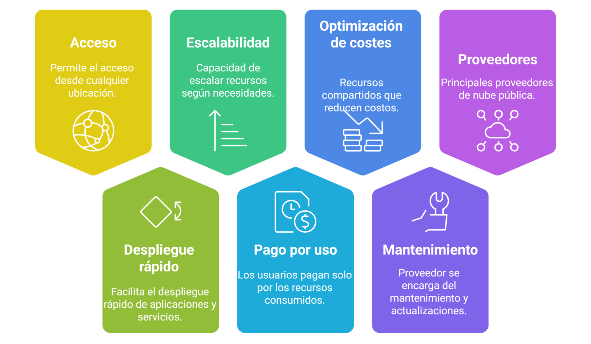
La nube privada es un modelo en el que la infraestructura está dedicada exclusivamente a una única organización, proporcionando mayor control y personalización.
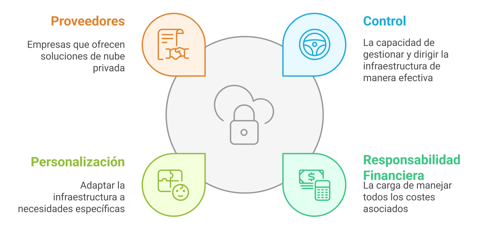
La nube híbrida combina recursos de nubes públicas y privadas, permitiendo la transferencia de datos y aplicaciones entre ellas.
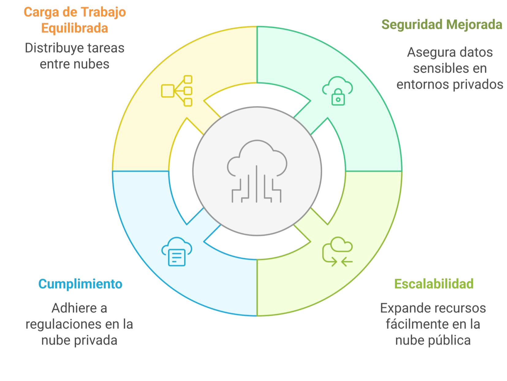
La multinube utiliza servicios de diferentes proveedores, ya sean públicos o privados, para evitar la dependencia de un único proveedor.
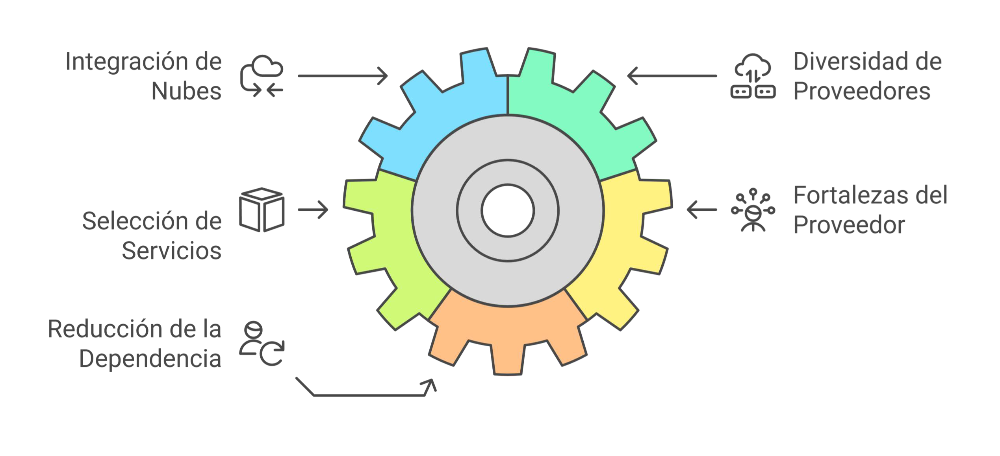
Definen la relación entre proveedores y usuarios, así como la gestión de recursos y responsabilidades. A continuación se describen los diferentes modelos. Tradicionalmente se han considerado tres niveles de servicio en la nube: Infraestructura como Servicio (IaaS), Plataforma como Servicio (PaaS) y Software como Servicio (SaaA). Actualmente también se considera el nivel Todo como Servicio (XaaS) que es una evolución de los otros tres.
El proveedor gestiona la infraestructura (servidores, almacenamiento, redes, virtualización), mientras que el usuario gestiona el sistema operativo, software y datos.
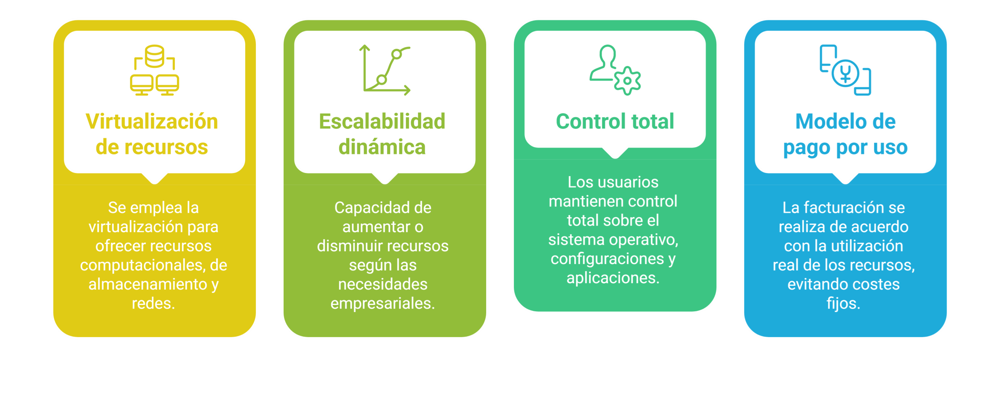
Una startup de comercio electrónico en rápido crecimiento necesita ampliar su infraestructura tecnológica para manejar un aumento significativo en el tráfico web durante la temporada de ventas. En lugar de invertir en servidores físicos, opta por utilizar un proveedor de IaaS como Amazon Web Services (AWS).
Este caso demuestra cómo IaaS permite a las empresas centrarse en su negocio principal mientras delegan la gestión de infraestructura a un proveedor confiable.
El proveedor gestiona la infraestructura, el sistema operativo y el software intermedio, dejando al usuario la gestión de aplicaciones y datos. Es especialmente indicado para el desarrollo de aplicaciones.
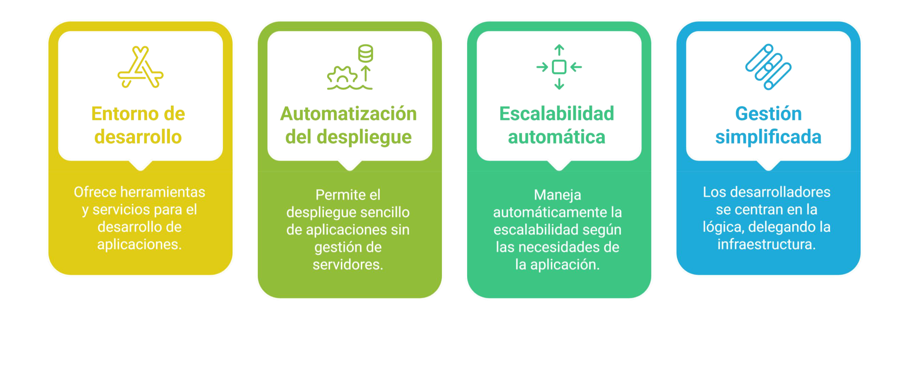
Un restaurante decide crear una aplicación móvil para que sus clientes puedan realizar pedidos en línea, reservar mesas y recibir notificaciones sobre promociones. En lugar de gestionar la infraestructura y herramientas necesarias para el desarrollo, el restaurante opta por utilizar un proveedor de PaaS como Google App Engine.
Este caso demuestra cómo PaaS facilita el desarrollo de aplicaciones al proporcionar un entorno completo y gestionado, permitiendo a las empresas enfocarse en sus objetivos principales.
El proveedor gestiona todas las capas (infraestructura, plataforma, aplicaciones), y el usuario accede a las aplicaciones a través de internet.
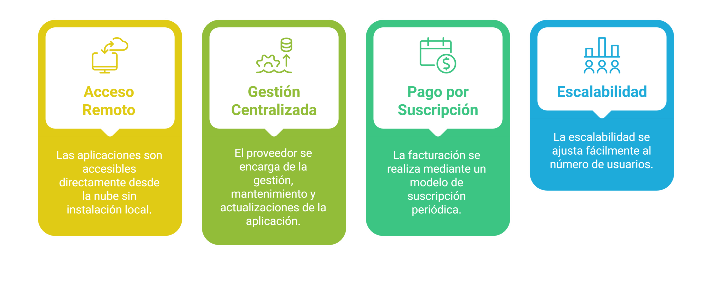
Una pequeña y mediana empresa (PyME) dedicada a la fabricación de muebles decide implementar un sistema de gestión empresarial para optimizar sus procesos de inventario, ventas y contabilidad. En lugar de desarrollar o adquirir software personalizado, opta por utilizar un servicio SaaS como SAP Business One o Microsoft Dynamics 365.
Este caso demuestra cómo el modelo SaaS permite a las PyMEs acceder a herramientas avanzadas de gestión empresarial sin incurrir en altos costes ni complejidades técnicas.
Por tipo de cliente:
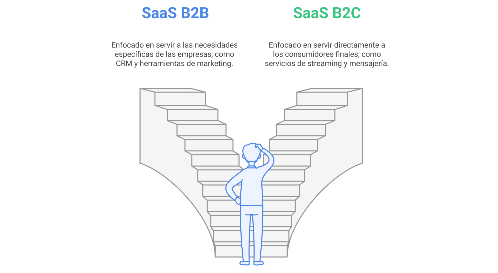
Por diseño:
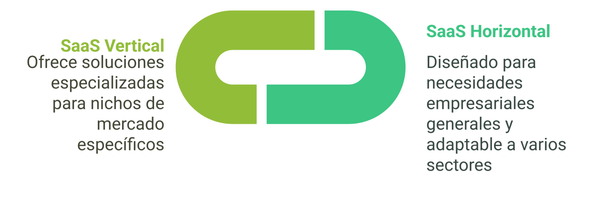
Engloba una amplia variedad de soluciones ofrecidas a través de internet, representando la evolución de SaaS, PaaS e IaaS.
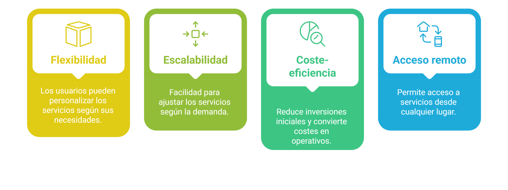
Los niveles de servicio del Cloud Computing están organizados de manera jerárquica, donde cada nivel depende del anterior para funcionar, y juntos forman un ecosistema completo que permite a las empresas elegir el nivel de servicio que mejor se adapte a sus necesidades.
Esta relación entre los diferentes niveles puede describirse como una jerarquía interdependiente, donde cada nivel se construye sobre el anterior y ofrece un mayor nivel de abstracción para el usuario. A continuación, se detalla esta relación:
Infraestructura como Servicio (IaaS) - La base
Plataforma como Servicio (PaaS) - Nivel intermedio
Software como Servicio (SaaS) - La cima
Interdependencia: Cada nivel depende del anterior para funcionar. IaaS proporciona la infraestructura, PaaS utiliza esa infraestructura para ofrecer un entorno de desarrollo, y SaaS utiliza las plataformas para ofrecer aplicaciones listas para el usuario final.
Abstracción creciente: A medida que subimos en la jerarquía, el nivel de abstracción aumenta. Los usuarios finales de SaaS no necesitan preocuparse por la infraestructura ni las plataformas subyacentes, mientras que los usuarios de IaaS tienen un control más granular pero también más responsabilidades.
Control vs. Simplicidad:
El siguiente diagrama ilustra la relación jerárquica entre los niveles de servicio en la nube, las prestaciones y los perfiles de los usuario habituales de estos.
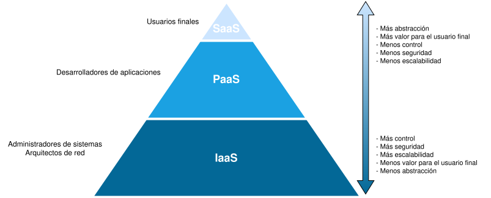
La responsabilidad de gestionar los recursos en la nube varía según el nivel de servicio (IaaS, PaaS, SaaS). A continuación, se detalla cómo se distribuyen las responsabilidades entre el proveedor y el usuario en cada modelo:
| Nivel de Servicio | Responsabilidad del Proveedor | Responsabilidad del Usuario |
|---|---|---|
| Infraestructura como Servicio (IaaS) | Infraestructura física, virtualización, redes, almacenamiento. | Sistema operativo, middleware, aplicaciones, datos. |
| Plataforma como Servicio (PaaS) | Infraestructura, sistema operativo, middleware, herramientas de desarrollo, bases de datos. | Aplicaciones, datos. |
| Software como Servicio (SaaS) | Infraestructura, sistema operativo, middleware, aplicaciones, mantenimiento, actualizaciones, seguridad. | Uso de la aplicación, configuración básica, gestión de datos propios. |
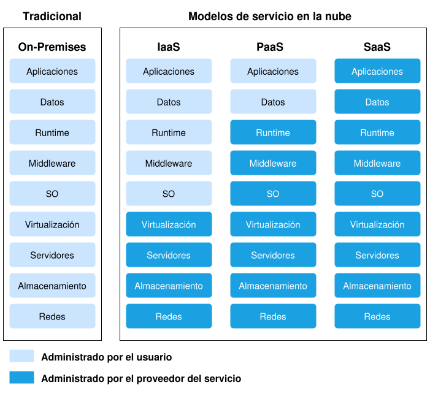
| Aspecto | On-Premises | Computación en la Nube |
|---|---|---|
| Inversión inicial | Alta (hardware y software propios). | Baja (modelo de pago por uso). |
| Escalabilidad | Limitada y lenta. | Dinámica y rápida. |
| Mantenimiento | A cargo de la organización. | A cargo del proveedor. |
| Acceso remoto | Limitado a la infraestructura interna. | Disponible desde cualquier lugar. |
Anteriormente a la aparición de las tecnologías de computación en la nube tanto el hardware como el software tenía que ser gestionado por cada organización. Este modelo de servicio de computación se denomina On-Premises.
El modelo On-Premises sigue siendo relevante en sectores donde la seguridad, la privacidad y el control total son prioritarios, aunque la computación en la nube ha ganado terreno por su flexibilidad y eficiencia.
📌 El modelo On-Premises se refiere a la gestión y operación de infraestructura tecnológica dentro de las instalaciones físicas de una organización. En este enfoque, la empresa es responsable de adquirir, instalar, configurar y mantener tanto el hardware como el software necesarios para sus operaciones.
Los modelos de nube (IaaS, PaaS, SaaS) ofrecen soluciones adaptadas a diferentes necesidades empresariales, desde la gestión de infraestructura hasta el desarrollo y uso de aplicaciones. Cada modelo tiene aplicaciones específicas que permiten a las organizaciones optimizar recursos, reducir costes y mejorar la eficiencia operativa. A continuación, se describen ejemplos prácticos de cómo estos modelos pueden ser utilizados en distintos sectores.
Permite gestionar infraestructura sin necesidad de invertir en hardware propio.
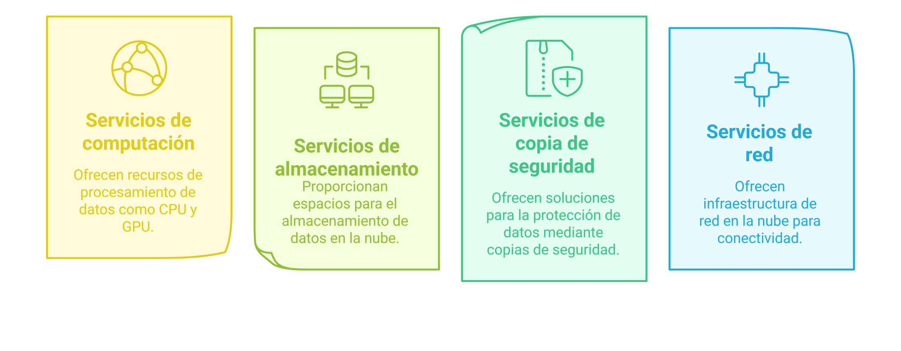
Facilita el desarrollo, despliegue y mantenimiento de aplicaciones.
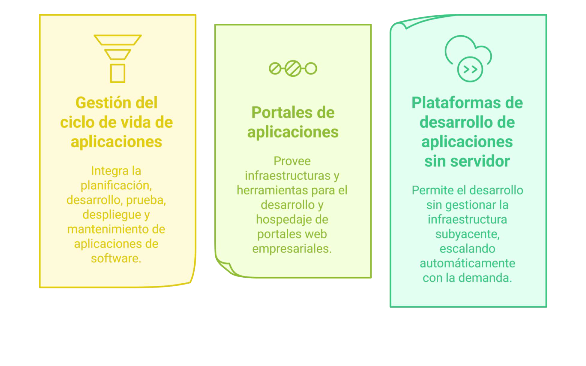
Permite acceder a aplicaciones listas para usar a través de la nube.
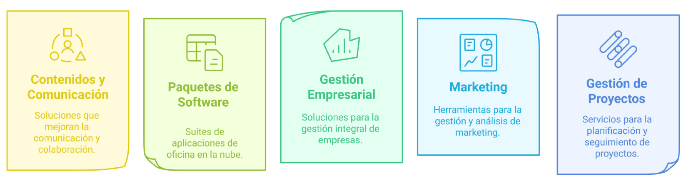
Los modelos complementarios a la nube tradicional, como Edge Computing, Fog Computing y Mist Computing, surgen para abordar desafíos específicos relacionados con la latencia, la conectividad y el procesamiento de datos en tiempo real. Estos enfoques permiten procesar datos más cerca de su origen, optimizando el rendimiento y reduciendo la dependencia de la nube centralizada.
El Edge Computing procesa los datos cerca del dispositivo que los genera, reduciendo la latencia y la carga de red. Este modelo es ideal para aplicaciones que requieren decisiones en tiempo real sin depender de una conexión constante a la nube.
Características:
Ejemplos:
Casos de uso:
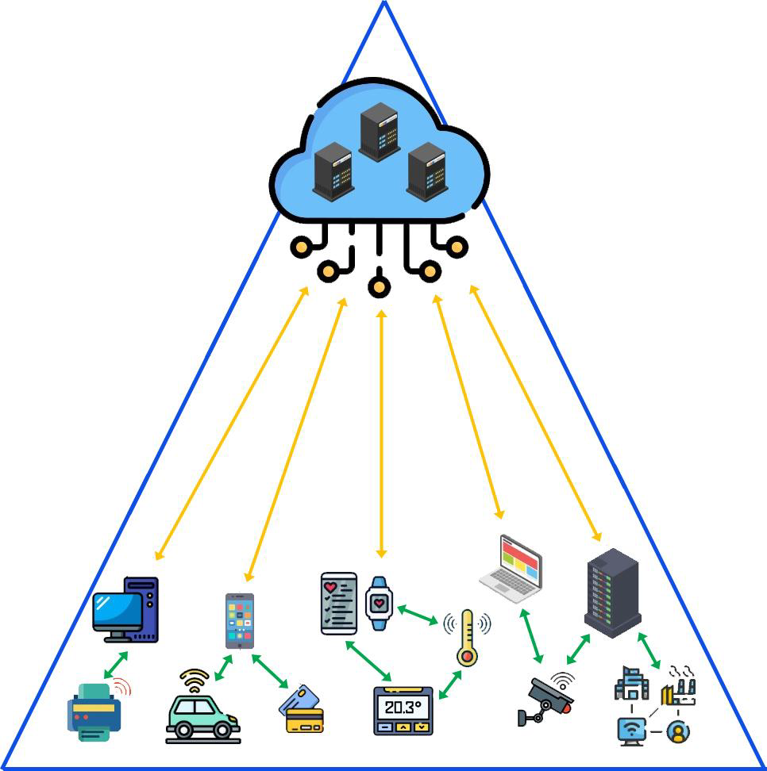
El Fog Computing actúa como un puente entre el Edge Computing y la nube, procesando datos en nodos intermedios, como routers o servidores locales, antes de enviarlos a la nube. Este enfoque es útil para sistemas que requieren análisis preliminares antes de un procesamiento más profundo en la nube.
Características:
Ejemplos
Casos de uso:
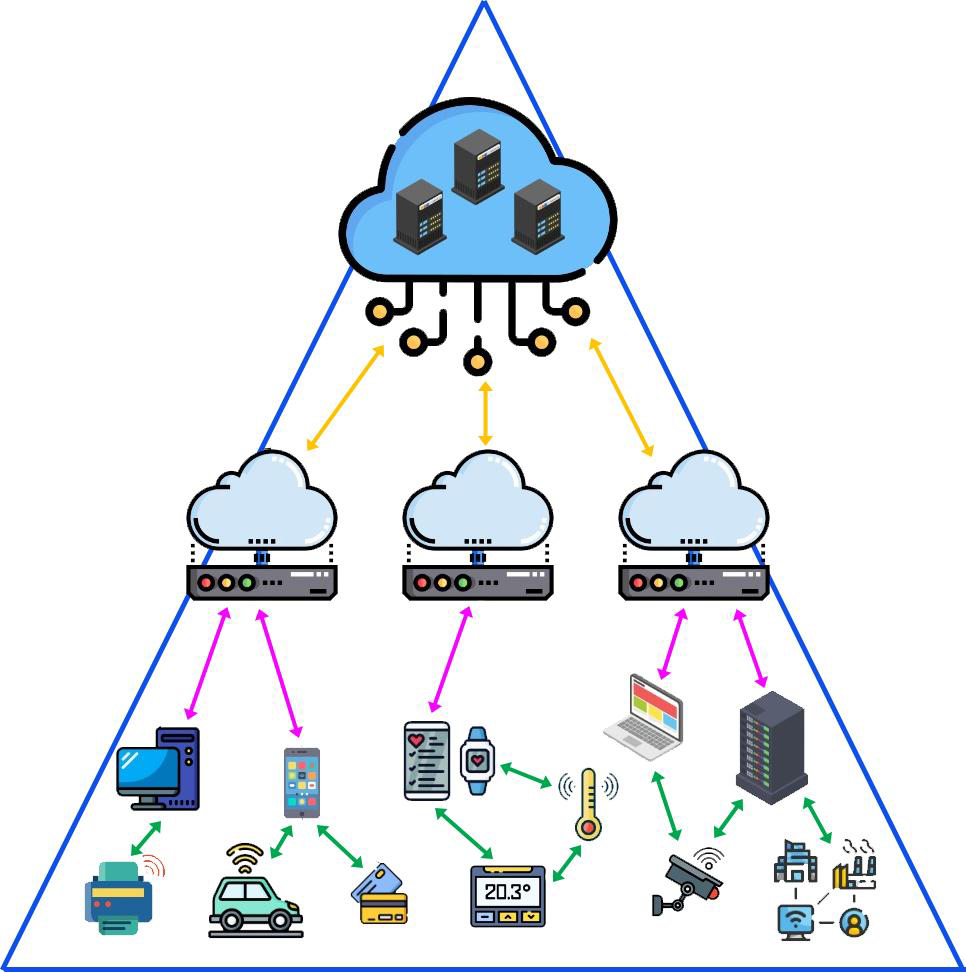
El Mist Computing lleva el procesamiento aún más cerca del origen del dato, dentro de los dispositivos inteligentes. Este modelo es ideal para entornos donde la privacidad y la inmediatez son prioritarias.
Características:
Ejemplos:
Casos de uso:
| Modelo | Procesamiento | Latencia | Conectividad | Casos de Uso |
|---|---|---|---|---|
| Edge Computing | Cerca del dispositivo | Muy baja | No siempre necesaria | Automoción, industria, salud |
| Fog Computing | Nodos intermedios | Baja | Parcialmente necesaria | Ciudades inteligentes, industria |
| Mist Computing | Dentro del dispositivo | Muy baja | No necesaria | Salud, IoT, privacidad |
La computación en la nube ha revolucionado la forma en que las empresas gestionan sus recursos tecnológicos, ofreciendo un modelo más eficiente y flexible. Este apartado analiza cómo la adopción de la nube puede influir positivamente en la rentabilidad empresarial, destacando los beneficios económicos y estratégicos que aporta.
Modelo de costes eficiente
Reducción de costes operativos
Mejora de la rentabilidad a largo plazo
Escalabilidad y flexibilidad
Optimización de recursos
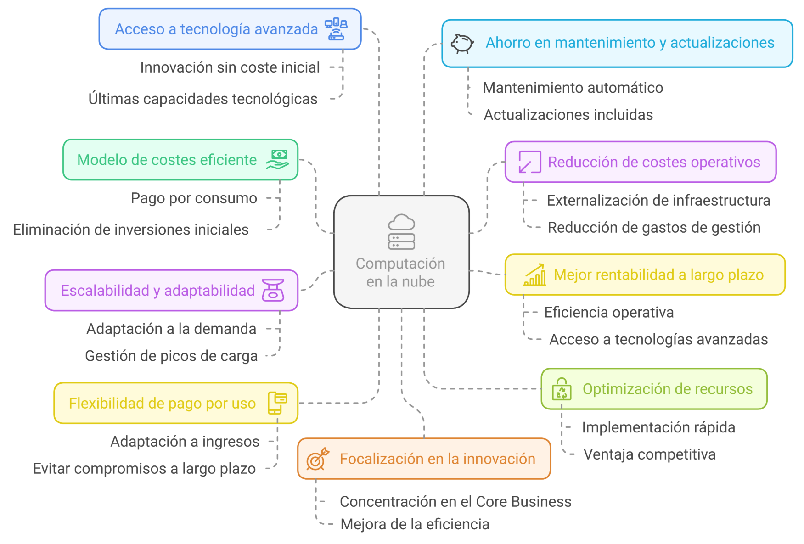
🎓 Ideas clave
La computación en la nube, en sus diferentes modelos de implementación y servicio, representa una herramienta fundamental para la transformación digital de las empresas.
Su capacidad para optimizar costes, mejorar la eficiencia, facilitar la escalabilidad y permitir el acceso a tecnología avanzada sin grandes inversiones iniciales la convierte en un pilar estratégico.
Además, la aparición de modelos complementarios como el Edge, Fog y Mist Computing amplía las posibilidades para abordar necesidades específicas de latencia, procesamiento local y eficiencia en la gestión de datos.
La elección del modelo de nube y las tecnologías complementarias adecuadas dependerá de las necesidades particulares de cada organización y su sector productivo.
El objetivo principal, tal como se destaca en la fuente, es comprender el potencial de estas tecnologías para transformar digitalmente los escenarios de negocio. En el siguiente infograma se sintetizan las conclusiones.
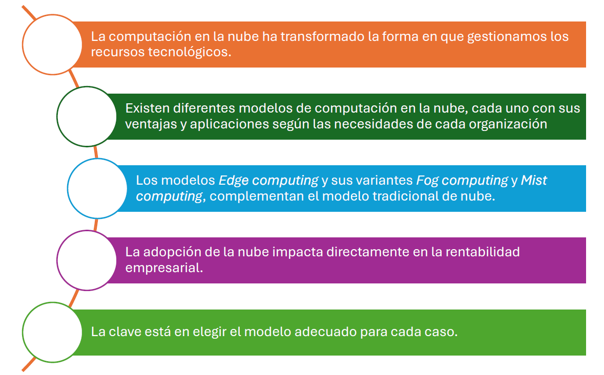